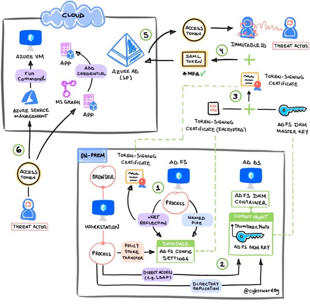

Golden SAML
Contents
Golden SAML#
Overview#
Microsoft’s identity solutions span on-premises and cloud-based capabilities. These solutions create a common user identity for authentication and authorization to all resources, regardless of location. We call this hybrid identity and one of the authentication methods available is federation with Active Directory Services (AD FS).
In this step-by-step guide, we simulate an adversary exporting the AD FS token signing certificate from an AD FS server to sign a new SAML token, impersonate a privileged user and eventually collect sensitive data via the Microsoft Graph API. This lab also focuses on showing the detection capabilities of Microsoft Defender security products and Microsoft Sentinel. Therefore, every simulation step is mapped to its respective alert and detection queries when possible.
Lab Environment#
Use the following document to prepare and deploy the infrastructure and services required to run the simulation plan.
Simulation#
This scenario starts with a compromised AD FS Server where a threat actor managed to obtain the credentials of the AD FS service account.

Step |
Tactic |
Technique |
Actions |
Description |
|---|---|---|---|---|
1 |
Connect to the AD FS configuration database and export the AD FS configuration settings. |
|||
2 |
Export the AD FS DKM master key. |
|||
3 |
Use the AD FS DKM master key to derive a symmetric key and decrypt AD FS certificates. |
|||
4 |
Use the stolen AD FS token signing certificate and sign a new SAML token to impersonate a privileged user that could also access resources in Azure. |
|||
5 |
Use the new SAML token to exchange it for an OAuth access token. |
|||
6 |
Request an OAuth access token with the SAML Assertion to call the Microsoft Graph API and read mail from the signed-in user. |